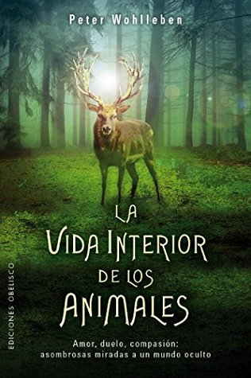

La vida interior de los animales (Spanish Edition)
Reseña por Jorge I. Zuluaga

Ver reseña en GoodReads (necesita cuenta)
Sé que ya había escrito otros libros después de su exitoso, pero también adorable y fascinante libro “La vida secreta de los árboles”, pero este es el texto que sus admiradores esperábamos como la continuación natural del libro por el que le conocimos.
Para quienes no han leído nada de Wohlleben, estamos hablando aquí de un guardabosques que un día, acicateado por conocidos y algún editor visionario, se puso a escribir datos y reflexiones sobre la vida de los organismos con los que interactúa en su trabajo, salpimentados por anécdotas entretenidas precisamente sacadas de su experiencia como guardabosques.
El resultado es, con este nuevo libro “La vida interior de los animales”, algunas de las piezas de divulgación biológica y ambiental más entretenidas e informativas de leer que he tenido entre manos. Pero no solamente eso, sino también algunas de las reflexiones más genuinas sobre el valor de la vida con la que convivimos en el planeta.
En este nuevo libro, como su nombre lo anticipa, Wohlleben nos sumerge en la vida interior de algunos animales, en especial de aquellos que habitan los bosques del norte de Europa en los que vive y trabaja: jabalíes, corzos, cuervos, ardillas, etc. Pero no solo de esos animales, sino también de aquellos con los que hemos establecido cooperaciones duraderas y fructíferas: perros, caballos, cabras, gatos, etc.
Con capítulos cortos y fáciles de leer, el libro hace un recorrido muy completo por casi todo el espectro de los sentidos y emociones animales: dolor, sabor, vejez, amor maternal, miedo, comunicación, asco, etc. El resultado no dejó de sorprenderme, y esto, a pesar de que por mi interés por el tema ya había leído un par de buenos libros sobre los sentidos o la inteligencia de animales no humanos escritos por autoridades en la materia.
Aunque este no es un libro escrito por un reconocido etólogo o un biólogo profesional, Wohlleben acompaña muchos de los datos o afirmaciones que nos entrega con referencias a la literatura especializada en la forma de enlaces al pie de página. Aunque la mayoría de las referencias están en alemán, no dudo que, de interesarse por cualquiera de ellas, cualquiera de nosotros podría buscar la fuente original.
El único defecto que le encontré al libro —y hoy no entiendo por qué no tiene una valoración mejor aquí en Goodreads, pues a la fecha en que escribo esta reseña el puntaje promedio es un sorprendente 3.76, pero creo que es en parte por la reacción de muchas personas a la mal llamada “humanización de los animales”— son algunos defectos de redacción que hacen que algunas frases estén construidas de forma extraña y difícil de leer. No sé si es un defecto del original o de la traducción.
Termino diciendo que comparto con Wohlleben el corazón de su postura: no es que estemos humanizando a los animales, es que los humanos somos animales y deberíamos tener la sensibilidad para aceptar que no somos excepcionales en todos los aspectos de nuestra vida.
La labor de divulgación de personajes como este guardabosques es fundamental para que entendamos que, solo admitiendo que los animales no humanos tienen una vida interior en su mayoría idéntica a la nuestra, podremos empezar a protegerlos de ese virus mental que se instaló en la humanidad llamado “excepcionalidad humana” y que lleva siglos convirtiendo a la Tierra en un planeta de dolor y sufrimiento.